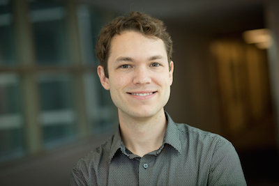

|
|  | Assistant Professor Contactoffice: Rhodes Hall 218 |
Damek Davis received his Ph.D. in mathematics from the University of California, Los Angeles in 2015. In July 2016 he joined Cornell University's School of Operations Research and Information Engineering as an Assistant Professor. Damek is broadly interested in the mathematics of data science, particularly the interplay of optimization, signal processing, statistics, and machine learning. He serves as an associated editor for Mathematical Programming (starting in 2022). He is the recipient of several awards, including the INFORMS Optimization Society Young Researchers Prize in (2019), a Sloan Research Fellowship in Mathematics (2020), and an NSF CAREER Award (2021).
Subgradient methods under weak convexity and tame geometry
Damek Davis, Dmitriy Drusvyatskiy
SIAG/OPT Views and News (2020)
Avoiding saddle points in nonsmooth optimization
Updated (11/2021) [Video]
Stochastic subgradient method converges on tame functions
Updated (8/2019) [abstract]
Nonsmooth and nonconvex optimization under statistical assumptions
Updated (4/2019) [abstract]
Subgradient methods near active manifolds: saddle point avoidance, local convergence, and asymptotic normality
Damek Davis, Dmitriy Drusvyatskiy, Liwei Jiang
Manuscript (2021)
Clustering a Mixture of Gaussians with Unknown Covariance
Damek Davis, Mateo Diaz, Kaizheng Wang
Manuscript (2021)
Proximal methods avoid active strict saddles of weakly convex functions
Damek Davis, Dmitriy Drusvyatskiy
Foundations of Computational Mathematics (2021)
Low-rank matrix recovery with composite optimization: good conditioning and rapid convergence
Vasileios Charisopoulos, Yudong Chen, Damek Davis, Mateo Díaz, Lijun
Ding, Dmitriy Drusvyatskiy
Foundations of Computational Mathematics (to appear) [code]
Stochastic model-based minimization of weakly convex functions.
Damek Davis, Dmitriy Drusvyatskiy
SIAM Journal on Optimization (to appear) [blog]
INFORMS Optimization Society Young Researchers Prize (2019)
Stochastic subgradient method converges on tame functions.
Damek Davis, Dmitriy Drusvyatskiy, Sham Kakade, Jason D. Lee
Foundations of Computational Mathematics (to appear)
Finalist for the Best Paper Prize for Young Researchers in Continuous Optimization (2019)
The nonsmooth landscape of phase retrieval
Damek Davis, Dmitriy Drusvyatskiy, Courtney Paquette
IMA Journal on Numerical Analysis (to appear)
A Three-Operator Splitting Scheme and its Optimization Applications.
Damek Davis, Wotao Yin
Set-Valued and Variational Analysis (2017) [code] [slides]
Convergence rate analysis of several splitting schemes
Damek Davis, Wotao Yin
Splitting Methods in Communication and Imaging, Science and Engineering (2017) [video] [slides] [summary]
Winner of the 2014 INFORMS optimization society best student paper prize.
NSF CAREER Award (2021)
Sloan Research Fellowship in Mathematics (2020)
INFORMS Optimization Society Young Researchers Prize (2019)
Finalist for the Best Paper Prize for Young Researchers in Continuous Optimization (2019)
Finalist for A. W. Tucker Prize for outstanding doctoral thesis (2018)
NSF Math Postdoctoral Fellowship (2015)
Pacific Journal of Mathematics Dissertation Prize (2015)
INFORMS Optimization Society Student Paper Prize (2014)
NSF Graduate Research Fellowship (2010)
Elected to Phi Beta Kappa (2009)
I have given or will give presentations of my work at Cornell (2015-2017); University of California, Los Angeles (2010-2015, 2017); Stanford (2015); University of Washington, Seattle (2015, 2018); University of Waterloo (2015); University of Wisconsin, Madison (2015, 2016); CVPR (2014); International Symposium on Mathematical Programming (2015, 2018); Institute for Mathematics and its Applications (2016); INFORMS annual meeting (2014-2017,2019); INFORMS international meeting (2016); SIAM Imaging conference (2016); SIAM annual meeting (2016); Google, NYC (2016, 2017); SIAM Optimization Conference (2017, 2021); EUROPT (2017); MIT ORC (2018); Princeton ORFE (2019); ICCOPT (2019); McGill University (2020); FoCM (2020, Canceled); SIAM Math of Data Science (2020, Canceled); NeurIPS OPT (2021).
Editorial
Associated editor for Mathematical Programming (beginning in 2022).
Conference/workshop/seminar organization:
Continuous Optimization cluster co-chair (International Symposium for Mathematical Programming, 2020-)
Optimization in Data Science track co-chair (INFORMS Optimization Society Conference, 2020)
Program Committee Member (OPTML NeurIPS, 2016)
Departmental Service: Cornell ORIE colloquium (2016, 2020), Cornell CAM colloquium (2017), Cornell COR-OPT Seminar (2018); ORIE Graduate Admissions: 2018-2020; ORIE MEng Admissions: 2017, 2021.
Doctoral Supervising Committee Member: Qinru Shi (CAM), Calvin Wylie (ORIE), Miaolan Xie (ORIE) Chair: Vasilis Charisopoulos (ORIE), Mateo Diaz (CAM), Ben Grimmer (ORIE), Liwei Jiang (ORIE)
Outreach: Undergraduate research supervisor for Naijia (Anna) Dong (ORIE); K-12 Outreach: Speaker at Ithaca High School mathematics seminar; NSF GRFP writing panel (UCLA).
I am a field member of ORIE, Math, and CAM
Current PhD Students
Vasilis Charisopoulos (ORIE)
Liwei Jiang (ORIE)
Tao Jiang (ORIE)
Current Undergraduate Students
None
Past PhD Students
Mateo Díaz (CAM)
Next Position(s)
Postdoc at Caltech (hosted by Venkat Chandrasekaran and Joel Tropp)
Asst Prof. at Johns Hopkins University (Applied Math)
Ben Grimmer (ORIE, Joint with J. Renegar)
Next Position
Asst Prof. at Johns Hopkins University (Applied Math)
Past Undergraduate Students
Naijia (Anna) Dong (ORIE)
Next position: Columbia U. Masters Program in Operations Research
Optimization: Structure, Duality, Calculus, and Algorithms
Draft of F’19 notes for my course ORIE 6300
(Last Update: 1/2020)
Current:
(F’2021) ORIE 7391: Selected Topics in Mathematical Programming
Past:
(F’2020) ORIE 3300/5300: Optimization I
(S’2020) ORIE 4740 Statistical Data Mining I
(F’18) ORIE 3300/5300: Optimization I
(S’18) Math 2940: Linear Algebra for Engineers
(S’17) ORIE 4350 Game Theory